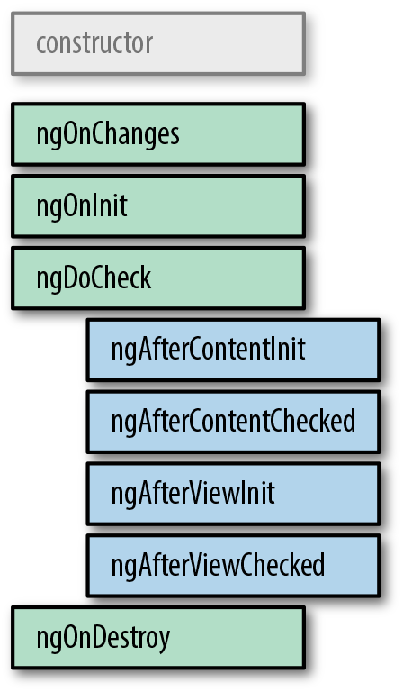

Component Lifecycle
Created for
Iva E. Popova, 2016-2020,

Component Lifecycle
Component Lifecycle
Overview
- Angular bootstrap process consists of the two major phases:
- Constructing components tree
- Change detection
Constructing Components Phase
- At this phase only the component constructors are called.
- the constructor() method is the only method that is called in the context of the injector. Thus, this is the place to inject any dependency you might need.
- The @Input communication mechanism is processed on following change detection phase so input bindings are not available in constructor.
Change Detection Phase
- There are 8 different stages in the component lifecycle at Change Detection phase.
- Every stage is assigned with a life cycle event and Angular provides us with a lifecycle hook interfaces so we can respond to these events.
lifecycle hooks
{kind=link}
lifecycle hooks
| Interface | Method | Description |
|---|---|---|
| OnChanges | ngOnChanges | Called when an input or output binding value changes |
| OnInit | ngOnInit | After the first ngOnChanges |
| DoCheck | ngDoCheck | Developer’s custom change detection |
| AfterContentInit | ngAfterContentInit | After component content initialized |
| AfterContentChecked | ngAfterContentChecked | After every check of component content |
| AfterViewInit | ngAfterViewInit | After component's view(s) are initialized |
| AfterViewChecked | ngAfterViewChecked | After every check of a component's view(s) |
| OnDestroy | ngOnDestroy | Just before the directive is destroyed |
ngOnInit() hook
Use to perform the following initialization tasks:
- Perform complex initialization outside of the constructor. Components should be cheap and safe to construct.
ngOnInit()is a good place for a component to fetch its initial data - Members marked as @Input() will be available here (but not in the constructor)
- Remember, that Angular calls ngOnChanges() before ngOnInit(), but ngOnInit() is called only once, while ngOnChanges() is called also many times after that.
ngOnDestroy() hook
This is the place to free resources that won't be garbage-collected automatically. To prevent memory leaks:
- Unsubscribe from Observables and DOM events.
- Stop interval timers.
- Unregister all callbacks that the directive registered with global or application services.
References
These slides are based on
customised version of
framework